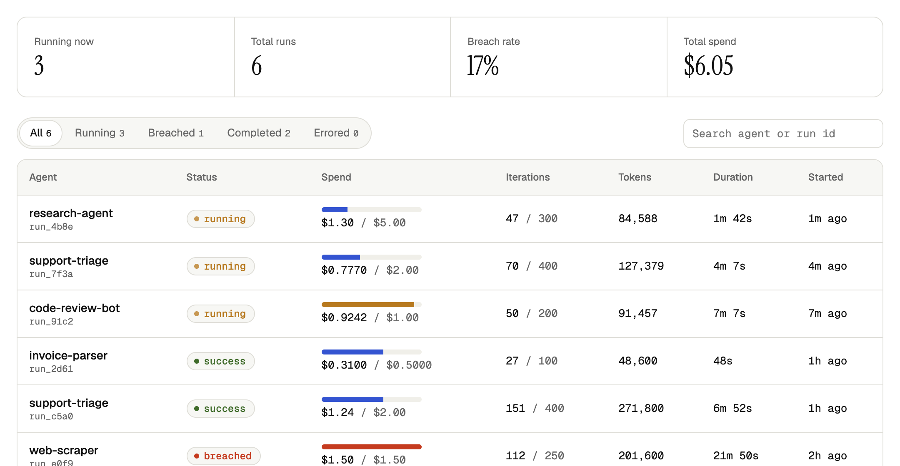

On-call for AI agents
Fences sits inside every agent loop. Watch runs live, read what the agent decided and why, stop any run in one click, and set hard limits it can't raise itself.

The 3am workflow
Everything you need when an agent misbehaves, in one place, from the first odd step to the fix.
live runsEvery run streams in as it works: spend, steps, tokens and status, per agent.
decision trailWhat the agent did and why, step by step, on a timeline where retry loops stand out.
one clickStop any run from the dashboard. The agent's next step is refused and it wraps up cleanly.
agent limitsPer-run, daily and monthly caps the agent can't raise, so the next one stops itself.
Before and after
A customer tells you. You grep logs to guess what it was doing, then kill the pod.
The agent stops itself at its cap and explains why. In the morning the timeline shows the retry loop, so the fix is obvious.
How it works
pip install agentfences and point it at your Fences key.checkpoint() after each model call. Breaches come back as a result, not an exception.import agentfences from agentfences import governed, checkpoint, log_decision agentfences.init(api_key="fc_...", endpoint="https://your-fences-instance.com") @governed(budget_usd=5.00, max_iterations=300, max_tokens=500_000) async def research(messages): while True: log_decision(reasoning="searching sources", action="search") response = call_llm(messages) result = await checkpoint( cost_delta_usd=cost(response.usage), tokens_used=response.usage.total_tokens, ) if result.breached: # budget_exceeded, iteration_limit, ... messages.append({"role": "system", "content": result.system_prompt}) return call_llm(messages) # wrap up gracefully
The platform
Stop a misbehaving run from the dashboard. Its next checkpoint is refused with a clear reason, so the agent winds down instead of crashing.
Every step's action and reasoning, filterable by category and time, on a timeline where loops and slow steps stand out.
Spend, steps, tokens and status for every run as it checks in, grouped by agent.
Per-run ceilings plus daily and monthly spend caps, enforced on the server and set only from the dashboard.
A run hit its fence but should finish? Raise the limit and it carries on at the next checkpoint. No redeploy.
Each agent gets its own key, so one runaway can't spend another's budget, read its runs or report as it.
FAQ
No. Your agent reports cost, tokens and an optional short reasoning note at each checkpoint. Prompts and completions never leave your infrastructure.
The checkpoint returns breached with the reason: a run limit (budget_exceeded, iteration_limit, time_limit, token_limit), the agent's daily or monthly cap, or stopped_by_user when someone stopped it. The agent gets a ready-made message to wrap up with, and further checkpoints are refused until you raise the limit.
Anything with a loop. Fences doesn't care whether you use raw API calls, LangChain or your own orchestrator. You call checkpoint() where a step ends.
Yes. agentfences.init(local_only=True) enforces limits in-process with no key. Add an API key when you want the dashboard and the stored audit trail.
Google, GitHub, Microsoft, Apple, email and password, or your company's SAML/OIDC SSO.
One decorator: see every run, understand every decision, stop anything.
Get started